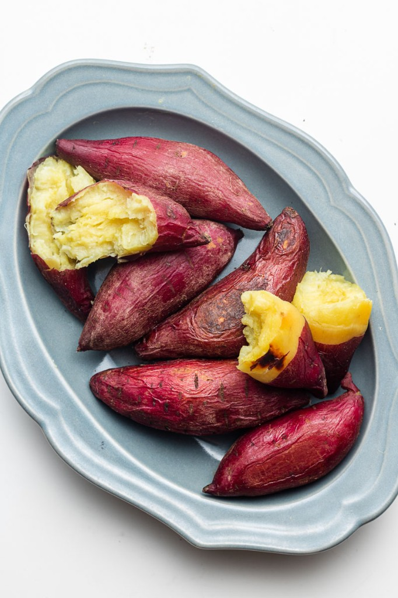

Condensation
Build-up. Lose water.
- Glycosidic bond
- Glucose + glucose − H₂O → maltose.
- C₆H₁₂O₆ + C₆H₁₂O₆ − H₂O → C₁₂H₂₂O₁₁.
Ch5 · BB02 Molecules of Life
Organic molecules contain C–C or C–H bonds. Carbon dioxide is not organic.
Seven nutrient groups: carbohydrates, lipids, proteins, dietary fibre, vitamins, minerals and ions, and water. Nucleic acids carry genetic information. They are not an energy food.
| Class | Examples | Nature | Energy |
|---|---|---|---|
| Primary foods | Carbohydrates, proteins | Organic | About 17 kJ/g |
| Primary foods | Lipids | Organic | About 37 kJ/g, about twice the others |
| Protective foods | Dietary fibre, vitamins | Organic | No energy value |
| Protective foods | Minerals, ions, water | Inorganic | No energy value |
Key idea
| Test | Positive |
|---|---|
| Clinistix (glucose) | Pink → purple |
| Benedict’s | Brick-red precipitate |
| Iodine (starch) | Brown → blue-black |
| Albustix (protein) | Yellow → blue-green |
| Biuret | Blue → violet |
| Grease-spot (lipid) | Translucent spot; disappears in solvent |
| DCPIP (vitamin C) | Blue → colourless |
| Burning (energy) | Longer flame; bigger temperature rise |
| Nutrient | About |
|---|---|
| Carbohydrate | ~17 kJ/g |
| Protein | ~17 kJ/g |
| Lipid | ~37 kJ/g — double before adding to carb or protein in burning test |
| Fibre, vitamins, minerals, water | No energy value |
Build-up. Lose water.
Breakdown. Gain water.
C, H and O, with H:O = 2:1. Glucose is C₆H₁₂O₆.
About 17 kJ/g.
| Monosaccharide | Disaccharide | Polysaccharide | |
|---|---|---|---|
| Solubility | Soluble | Soluble | Insoluble |
| Taste | Sweet | Sweet | Not sweet |
| Reducing sugar | Yes | Yes, except sucrose | No |
| Size |
One sugar unit

|
Two sugar units. At least one is glucose.

|
A long chain

|
One sugar unit. Soluble, sweet, and reducing.
Monosaccharide
Monosaccharide
Monosaccharide
Monosaccharide
Monosaccharide
Two sugar units. Soluble and sweet. Reducing, except sucrose.
Disaccharide. Glucose + glucose

Disaccharide. Glucose + fructose
Disaccharide. Glucose + galactose
A long chain. Insoluble, not sweet, and non-reducing.
Polysaccharide
Polysaccharide
Polysaccharide
C, H and O. Some also contain P. H:O is greater than 2:1, so there is much more hydrogen than in a carbohydrate.
About 37 kJ/g. Double a lipid result before adding it to carbohydrate or protein energy.
1 glycerol + 3 fatty acids
1 glycerol + 2 fatty acids + phosphate
Four carbon rings. Insoluble in water. Non-polar.
Steroid
Steroid. Made from cholesterol
C, H, O and N. Some also contain S. About 17 kJ/g.
A whole protein is not absorbed. Hydrolysis releases amino acids, which enter capillary blood.
Denaturation is irreversible.
Channels, receptors, carriers, antigens
Muscle, skin, nails
Catalysts
Chemical signals
Immune defence
Organic: C, H, O, N and P.
The base sequence of DNA sets the amino-acid sequence of a polypeptide, and that sets the protein’s shape and job.
Basic unit
Inorganic. No energy value. Needed in small amounts.
They regulate metabolic reactions and help build body tissues.
Ca²⁺
Fe²⁺
Inorganic. No energy value.
NO₃⁻
Mg²⁺
Phosphate group
I⁻
Organic. No energy value. Needed in small amounts.
They regulate metabolic reactions and help build tissues.
Heat destroys water-soluble vitamins.
| Vitamin A | Vitamin C | Vitamin D | |
|---|---|---|---|
| Solubility | Fat-soluble | Water-soluble | Fat-soluble |
| Polarity | Non-polar | Polar | Non-polar |
| Absorption | With fats, in the small intestine | In the small intestine | Made in skin in sunlight. Also absorbed with fats. |
| Storage | Liver and fat tissue | Little is stored. Excess leaves in urine. | Liver and fat tissue |
| Test | None in these notes | DCPIP: blue to colourless | None in these notes |
Fat-soluble
Water-soluble. C for connective tissue.
Fat-soluble
Organic, but no energy value for humans. There is no human enzyme to digest it.
Plants make cellulose to support the cell wall. Humans happen to eat it, and call it dietary fibre.
Cellulose in plant cell walls
Pectin in plant cells
Inorganic. No energy value.
Too little and too much can both cause disease. Malnutrition includes undernutrition and overnutrition.
| Nutrient | Deficiency |
|---|---|
| Carbohydrate |
|
| Lipid |
|
| Protein |
|
| Dietary fibre |
|
| Calcium |
|
| Iron |
|
| Iodine |
|
| Vitamin A |
|
| Vitamin C |
|
| Vitamin D |
|
| Nutrient | Excess |
|---|---|
| Carbohydrate |
|
| Lipid |
|
| Protein |
|
| Calcium |
|
| Iron |
|
| Iodine |
|
A positive result is a colour change, or a spot that appears and then disappears.
Clinistix
Benedict’s test
Iodine test
Albustix
Biuret test
Grease-spot test
DCPIP test
Burning test
A balanced diet matches energy input from food with energy output from activity.
If input is greater than output, the body stores the extra as fat. Biomass rises, so weight rises.
If output is greater than input, the body breaks down stores such as glycogen and fat. Biomass falls, so weight falls.
Short summary: common foods that match each nutrient group.
Bread, grains, potato, banana, sweet fruit
Butter, fatty fish, plant oils, fat in meat
Meat, chicken breast, protein powder, milk, skimmed milk
Phospholipid plus protein
Sports drinks
Green vegetables, carrots, fresh fruit and vegetables
Plant foods